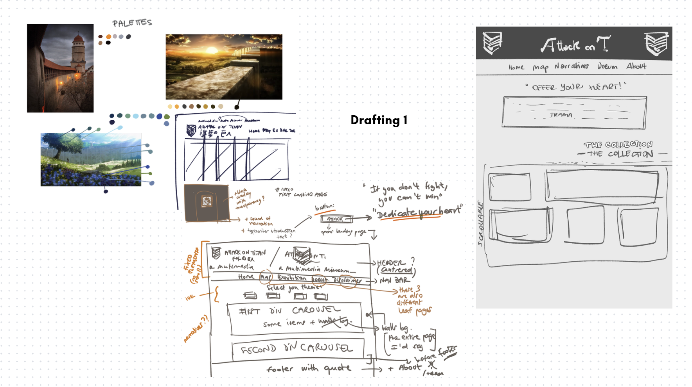
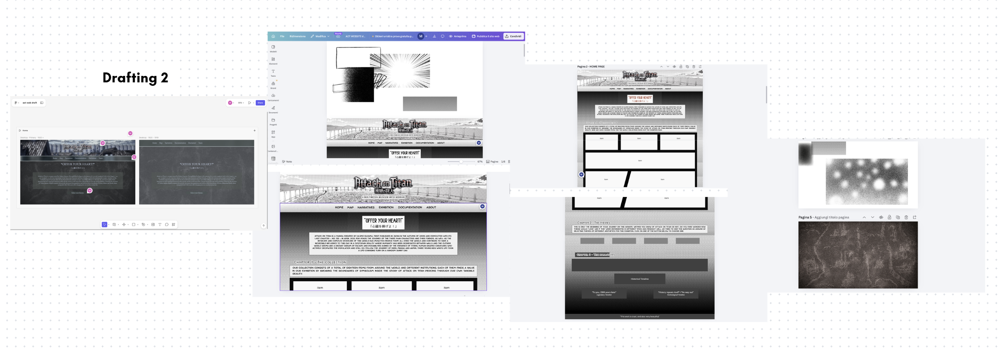
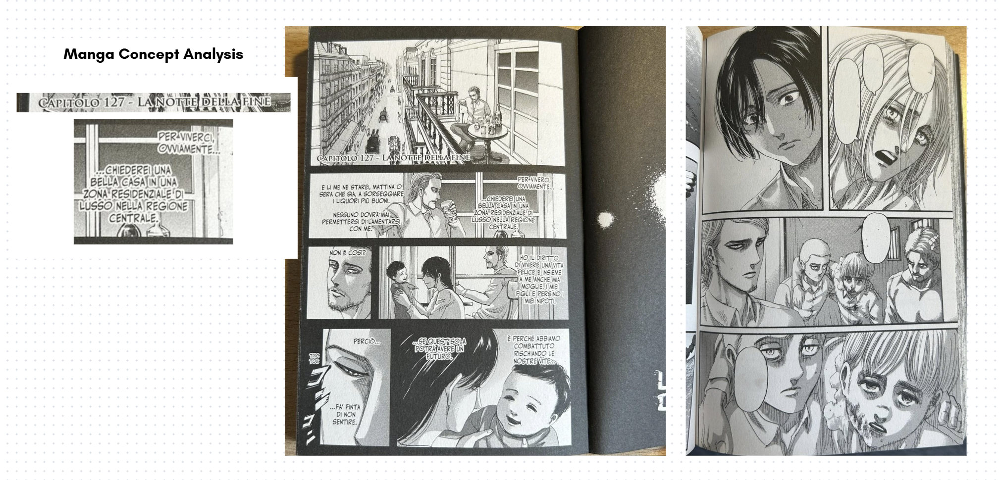
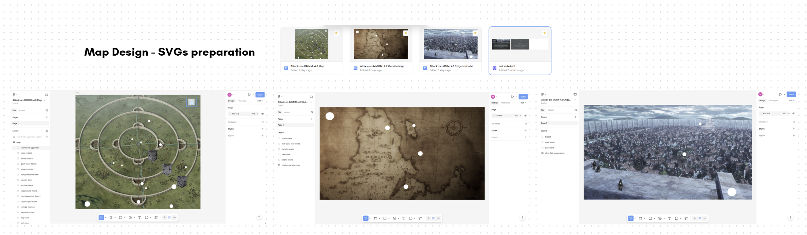
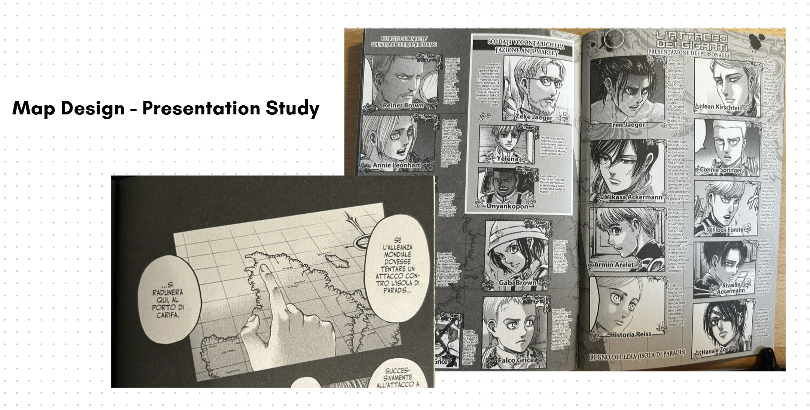
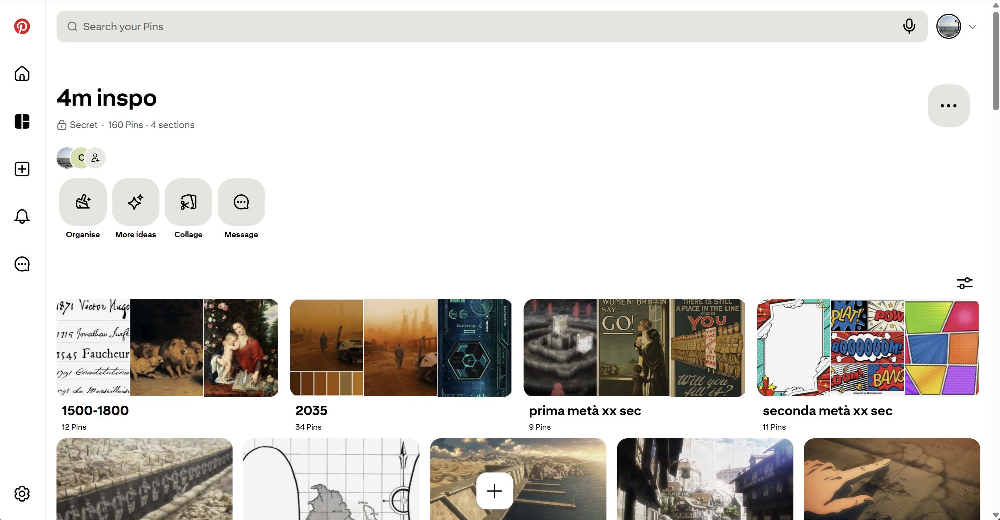
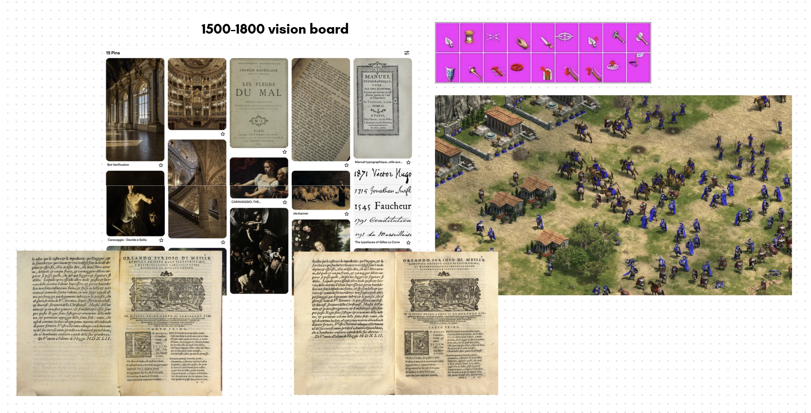
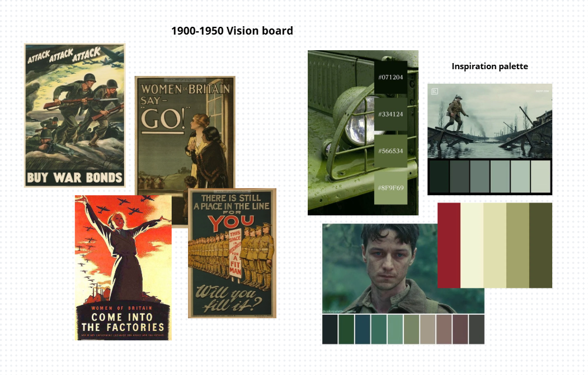
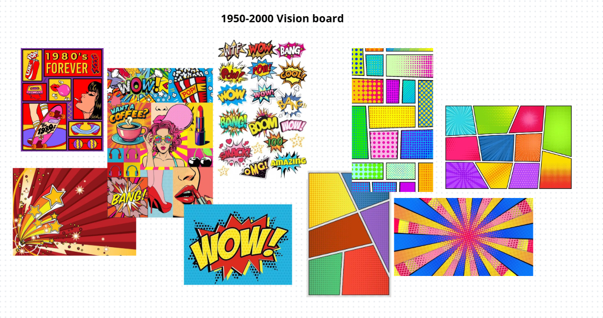
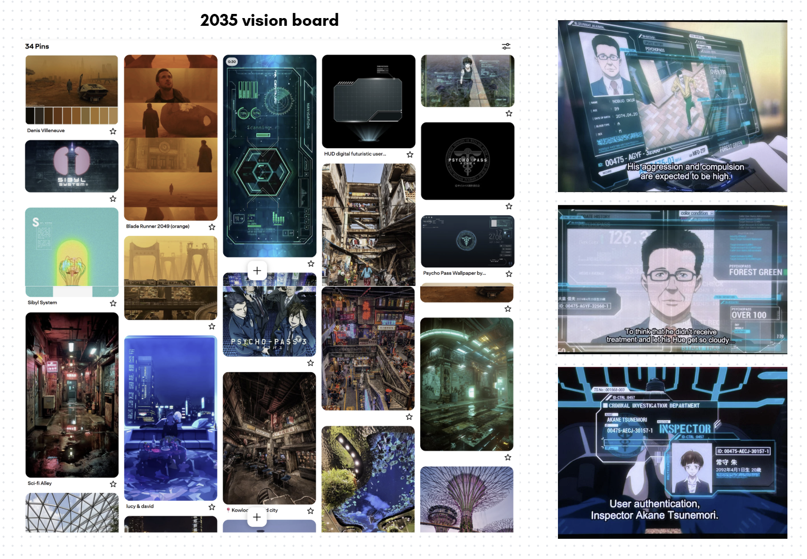

Documentation
Here you will find all the information and documentation about the project of Attack on MMMM.
Project and General Purpose
A framework of tools to create virtual visits and narratives (Meta Mirror) about the content of a collection of arbitrary physical items (a Museum) in a pleasurable and meaningful way by associating the images of the items with texts (from very short labels to very long treaties) and images (Multimedia) to correctly situate the items and their explanations.
Meta Mirror - This project is about a digital companion mimicking the placement and paths to reach some physical objects.
Museum - The physical objects have been collected to represent a meaningful and systematic representation of some cultural phenomenon (of the past or of the present). Your job is to help the visitors in planning the visit while at home as well as guiding them during the visit itself.
Multimedia - Multimedia does not mean images or video. Multimedia means that there is a variety of media, including text, images and video. They are meant to guide the visitors, identify the objects, and explore the themes they represent. (Vitali F., 13-Theproject2025, slides of the course Information Modeling and Web Technologies, 2025)
Starting with the guidelines for this project, our idea was to build a digital companion which acts as an immersive virtual museum and auxiliary tool for a physical one. Before researching about the topic, we were also aware of the existence of a museum in Japan, which is dedicated to Hajime Isayama and Attack on Titan, located in Hita, the author's hometown. While the physical museum primarily serves as a testament to the author's artistic progression - featuring early sketches and figures - our project extends that collection by integrating deep institutional and cultural heritage research. Through a comprehensive multimedia framework of texts, images, and interactive elements, we situate these fictional concepts alongside their real-world historical counterparts. Ultimately, this website serves a dual purpose: it acts as a planning and guiding tool for visitors of the physical museum, while simultaneously providing a complete, standalone exploration of the Attack on Titan cultural phenomenon for users experiencing the narrative from home.
Base Layout and Technologies
To top1. Design drafting: manga concept and Default theme



The design process for the landing layout of the website was developed through trial and error with the help of tools like Canva and Figma to aid in the visualization of the final product to be implemented later on with the help of different frontend programming languages.
Since we imagined our website to be a journey in which our users follow both the protagonists of Attack on Titan and the narration through which we wanted to tell the story of this artistic work, we thought of designing everything from the material medium that was the initiator of this work: the manga.
We drew inspiration from its peculiarities: black and white style, cartoonish but realistic (although not always) characterisation and a reading flow from right to left - maintaining a connection with the origins of the traditional Japanese writing system. As we can see in the pictures above*, the style of display is very neat and angular, with defined shapes (most of the time) which cut and divide the scenes, and the proportions of the different boxes changes in order of importance or emphasis given to a specific passage - always keeping in mind the reading direction from right to left and top to bottom.
In some cases, like in the example shown, the background is black, while in other the background is white and we can observe that this is a specific decision because the first case highlights moments of introspection or reminiscence of the character who is speaking, at times representing whole flashbacks, and the second case represents the normal, "present" timeline. We have also decided to keep this distinction, or inspiration from it, maintaining the darker style for our Collection, where items of the past come together in one place. In the Collection section, we directly reproduced the grid-like paneling composition for the items, giving them a narrative flow. The choice of our Default theme being based mostly on grayscale with very few, but noticeable, pops of (red) colours is also designed according to the manga of Attack on Titan.
Early in our design process, we considered representing the Default theme through the anime's beginning vibrant palettes (see the leftmost image of Figure 2), yet in any situation and behind every decision-making moment, only one question echoed in our minds: where did everything start? For which reason we sentenced the manga as a special form of medium to be the upholder of our tribute to the work of Attack on Titan.
The font families we used are exactly five: Anime Ace, Copperplate Gothic LT W01 29BC, Who Dares, Ditty and Noto Sans. The first two were researched and used to mirror as closely as possible the typographical style of the manga's chapter titles and body text, respectively, whereas Ditty is a font which is replicating Attack on Titan's English logo title; Who Dares is inspired by fonts used in the translations in Italian and English for onomatopoeias. As for Noto Sans, it deliberately takes some distance from the design choice made up until now to tap into another important reflection that stems from this story: we chose this inclusive, modern and "timeless" font to represent a trenchant quote of one of the main characters of the story, Mikasa Ackermann, and her simple yet rich and painful reflection about the world - "This world is cruel, but also beautiful".
*Pictures of the manga are taken from real life by the contributors.
Links:
- Canva: https://canva.link/e0n86uet4en51mb
- Figma (password: attackon4m), website draft: https://www.figma.com/site/YxwmBY4UuUXvNUvtHiQZwe/aot-web-draft?node-id=0-1&t=xITNXZIp2TwEeD3y-1
2. Essentials
Our technical core to build the infrastructure relies on a stack of HTML, CSS, Bootstrap's (version 5.3.8) components and JS.
HTML provides the full skeleton of the website layout:
- <main> tag contains the primary contents of the website except the navbar, the footer, and the additional screens of the pre-loader and the loader;
- <section> are assigned to the main conceptual containers of our contents;
- <div> are used to manipulate both Bootstrap utilities and intricate layout;
- headings of different sizes to easily establish a hierarchy of titles and sub-titles.
These tags established the first positioning for both the textual and visual content, which we then refined using CSS grid and Flexbox. We deployed CSS Grid when the composition was more "tabular" and needed a more precise approach even if more difficult to fix (for example regarding rows and columns measurements), instead we used Flexbox when the configuration didn't require complex structure (like for the Themes section's buttons, for example). When integrating more elaborate Bootstrap components instead, like cards, we worked with precast Bootstrap classes to maintain structural and visual consistency. The components significantly sped up the process to efficiently incorporate responsiveness for certain parts as well, rather than having to manually apply different styling rules for a wide variety of structures and screen sizes.
For sizing and spacing, we worked predominantly with rem units and em units to maintain a coherence with our typographical choices, and to allow fluid scalability for bigger screen sizes; in other cases, we selected pixels as our choice of unit for precise adjustments, like the case of the negative margin of the navbar to create a deliberate overlap with the header background.
We then employed JavaScript to automate components injection to the leaf pages and add interactivity inside the website. We have produced four different scripts, respectively:
- main.js: handles the core interaction of the website; it handles the removal of the pre-loader and loader screens and the replay only in the case of page refreshing (from the Home page) or initialising a new session, the audio toggling for the narration, the typewriter effect and mobile-responsive behaviour for overlay tapping interactions in the absence of hovering functionalities.
- comps.js: injects the header-navbar and footer in every HTML page through the use of <div> tags acting as placeholders; automatically manages the "active" state for navbar links to reduce redundant code, time-consumption and enhance maintainability.
-
themes.js: with a similar logic to comps.js, this script handles the injection of the
different CSS styles. It automatises cases where a button or link has a specific ID related
to a theme and corresponding CSS; the mapping is initialised through a dictionary and
the logic works by changing the
hrefattribute inside the head's <link> tag for the stylesheets; additionally, the script also usessessionStorageto store the user's theme choice thus remaining consistent when navigating the website. - items-logic.js: this file serves as the logical core for the dynamic display of information cards. The script extracts the object ID and the narrative category from the URL, retrieving the corresponding information in the JSON file; furthermore the file maintains state variables of text difficulty and length, this allows the user to customize the reading experience swapping the text on the fly without needing to reload the page. Finally, the script calculates the link for "Prev" and "Next" buttons, ensuring that the user remains in the logical sequence of the narrative selected.
It is necessary to underline that we employed the use of Gemini, ChatGPT and Codex extension for Visual Studio Code to implement most of our JS scripts, to aid in the CSS styling and to automate repetitive HTML tagging.
Collection Curation and Metadata
To top1. Items Curation
For the collection page, the structure was designed to provide continuity with the homepage layout, drawing inspiration from manga panels. Each element in the collection occupies a defined space reminiscent of comic book frames, maintaining a visual rhythm that guides the eye across the various cards. Each individual card is composed of several elements that provide the user with an initial presentation of the item:
- The item’s image: This is not merely a decorative element, but the primary visual touchpoint. It functions as an interactive link that transports the user to the item's specific web page; in this way, the image acts as a "portal" to view the object within its original digital context.
- The title and full name: This section combines the item's common name with its official designation as registered by the holding institution (such as museums or archives). This adds authority to the card, allowing the user to learn both the familiar name of the item and its formal identity within the world of cultural heritage preservation.
- The introductory description: Written with a narrative and engaging tone, the choice to remain non-specific is strategic. The goal is to provide a "taste" of the item's significance, enticing the reader to explore the site’s narrative sections to uncover historical details and the item's role within the story.
- Read more: This external link is essential for those wishing to conduct further research. The "Read more" button opens a window to external sources and academic or institutional insights, ensuring that the user can always trace back to broader information.
- QR code: This serves a functional and technical purpose. While the page’s graphic layout offers a visual and narrative presentation of the item, the QR code provides direct access to the structured metadata. By scanning it, the user is redirected to the CSV files stored in the project's GitHub Repository; these files contain the technical information and cataloged data for the object, ensuring full transparency regarding the sources and the details of the database used.
The purpose of the collection page is to show the user all the items included in the digital exhibition, provide them with "external" information related to these items, and create a "bridge" between the graphical interface and the technical data.
2. Metadata
1. Methodological Approach
To ensure the high-quality description, findability, and interoperability of a diverse range of cultural heritage items a specialized metadata selection process was implemented, mapping each item to the international standard best suited to its physical and functional nature.
2. Selection of Metadata Standards
The collection was categorized into three distinct groups, each governed by a specific schema:
- CDWA (Categories for the Description of Works of Art): Adopted for museum objects, including fine arts, scientific instruments, and historical artifacts. CDWA provided the necessary granularity to document materiality, dimensions, and the specific "Object Work Type" (e.g., the hypodermic syringe or the Abildgaard painting).
- MODS (Metadata Object Description Schema): Applied to digital images, photographs, and cartographic resources. MODS was selected for its robust ability to handle rich descriptive data for visual media, such as maps from the Rumsey and Leventhal collections, while maintaining a more sophisticated structure than simple Dublin Core.
- BIBFRAME & Dublin Core: Utilized for bibliographic and archival manuscript resources. We integrated the Linked Data capabilities of BIBFRAME (to model the relationship between the "Work" and the "Instance") with the essential descriptive elements of Dublin Core. This hybrid approach ensures that complex items like the Codex Regius are both structurally sound and web-compatible.
3. Data Architecture and Implementation
The workflow for data entry and distribution followed a rigorous three-step process:
- Systematic Extraction: Each item underwent a systematic extraction of key metadata fields (Identifier, Creator, Object Type, Date, Title, Source, Materials, Dimensions, and Holding Institution). These were mapped to the formal technical labels of the chosen standards (e.g., creatorIdentity for CDWA or namePart for MODS).
- Decentralized CSV Management: For every item, a unique, standalone CSV file was generated. This approach allows for modular data management, ensuring that metadata can be easily updated or harvested by external systems without affecting the entire database.
- Digital Identity Access: To bridge the gap between the physical context and digital documentation, each item is associated with a unique QR code. Upon scanning, the user is redirected immediately to the specific CSV file hosted on the project’s server, providing instant access to the item’s "digital identity card."
The Map and User Journey Design
To top

The Map page design process consisted of two distinct moments: researching items locations and designing the user (virtual) experience.
As introduced in the Project and General Purpose section, this website is meant as a digital companion working like a virtual museum or an "overlay" to a physical one, which is the reason why our map is not representing physical rooms but the metaphysical dimension of the items of our collection and their mirrored reference in the story. To add depth to these parallelisms, we decided to work with the map as a projector for the diegetic geolocalisation of our real world items. In this way, we were able not only to make our user fully immerse themselves in the world of Attack on Titan and experience a bird's-eye view of the events, but also to make the user associate time with space and the real-world with the fictional, creating a third dimension with blurred boundaries.
In the first phase, we researched how to precisely locate our items within the story's world, and if an exact geolocalisation wasn't possible, to infer the most logical approximate location from the gathered information. For example, while the exact location of Eren's father's basement is unclear [see Shiganshina Map], environmental analysis of various anime scenes suggests it must have been slightly uphill and far enough from the breach in the wall to be heavily damaged but still accessible. For other items, like the seaplane [see Outside Map] instead, we evaluated that pinpointing an exact location was going to be reductive of the item's dynamic narrative value (its value extends through a longer narrative arc and a moving journey rather than one exact position), therefore we deliberately placed it in an explicit location mentioned at some point in its narrative arc.
To execute this narrative disclosure, we designed three separate, interconnected maps. At first glance, they are only accessible sequentially, forcing the user's navigation to mirror the characters' paced journey and their expanding understanding of the world. While the progression partially follows the story's timeline, the separation addresses two purposes: practically, the lack of canonical complete world map, where exact locations are left to inference most of the time; and philosophically, to reinforce in the user the feelings connected to these separations of the worlds lived by the characters of the story (the Walls vs. the Outside and vs. the third, even more isolated dimension of the Coordinate).
To technically implement the maps, we decided to manipulate high-quality resolution images of the three maps in Figma. First, we overlaid custom shapes and images to highlight key locations and specific items. We then exported these layers as SVGs and embedded the code directly into our HTML pages. And lastly, to make these shapes interactive, we utilized Bootstrap components as follows:
- tooltips were used for any shape and image in the map with brief and straight-to-the-point explanations;
- offcanvas were used to provide details about the items and story references without disrupting the view of the map;
- accordions were used in the cases of items grouped together according to their first appearances.
Links:
Figma (password: attackon4m)
- Map: https://www.figma.com/design/PSmoXqK2AS4laOtPs88yap/Attack-on-MMMM--4.0-Map?t=xITNXZIp2TwEeD3y-1
- Shiganshina: https://www.figma.com/design/Q3siBwtwLcdmdg4TnoFCvN/Attack-on-MMM--4.1-Shiganshina-Map?t=xITNXZIp2TwEeD3y-1
- Outside: https://www.figma.com/design/8TIzmH8xGBJzTsjROOuKTD/Attack-on-MMMM--4.2-Outside-Map?t=xITNXZIp2TwEeD3y-1
The Themes
To topThe themes for this project are a way for this website to incorporate a reusable styling other than the one perfectly tailored to its philosophy like the Default theme. We decided to work on four different themes (1500-1800, 1900-1950, 1950-2000 and 2035) and each contributor has specifically worked on two of them. Our research and work for all of them started with the creation of a shared Pinterest board which held all of our visual inspirations for the designs and Attack on Titan inspirations.

1. 1500-1800

This theme's time-span was extending on 200 years and for this reason the inspirations drawn for the design relied on different aspects:
- the typographical look of print books with heavy influence of Orlando Furioso's print editions of 1547 and 1549: this inspired the research of mirroring paper-like texture and font families reminiscing of serif typographical typefaces from around 1550s to the 19th century, and the look of warm and brown tones;
- the Baroque movement and its peculiar decoration style: this mostly inspired the Collection representation with gold hues and corynthius-like movement, with the idea of recreating the feeling of witnessing a physical collection inside an historical palace from late 17th early - 18th century.
- Caravaggio's chiaroscuro paintings and Flemish painting: this drew the idea of darker tones and stark contrasts like the background of the website.
The typography chosen for this theme replicates and follows the four points of inspiration just introduced. With core fonts like EB Garamond, Baskervville, Beffle Medium and Zen Old Mincho we sticked to the recreation of serif, clean and heavier-looking typefaces; Rebelink was the font used to recreate the baroque-esque feel for titles; and last but not least, Son of Time, used in the heartfelt quote "Offer your heart!", directly inspired by the handwriting of Giovanni Borgia in his letters, to create a continuous line from the emotion-rich meaning to a human-like representation.
As a final immersive touch, we implemented a custom "hand" cursor inspired by Age of Empires, a strategic video-game based on history published in 1997 to ultimately connect a feeling of past-revival to the web design.
2. 1900-1950

Given the theme's focus on the first half of the 20th century, the style was designed to evoke an atmosphere of austerity, drawing primary inspiration from World War I and World War II propaganda posters. The design seeks to recreate an authoritative tone: bold borders are used to separate content and give a sense of "weight" and solidity to the elements, almost as if they were posters pasted onto a wall.
Regarding the colors, the selection is directly based on the limited color palette of the era's posters. The predominant color is military green, which conveys discipline and control. This is paired with a dark red, used to create strong contrast and draw attention. Instead of modern white, cream and ivory tones are used to simulate the cheap or aged paper of the period's flyers.
The choice of fonts also aims to reflect the communication style of that time. Specifically, the Oswald font was used: it is a tall, narrow character that mimics the headlines of enlistment posters, where space was limited and the message had to be readable from a distance. These features convey rigor and a certain "aggressiveness," an effect accentuated in the main titles through the use of very thick black outlines. This detail recalls the lettering made with stencils or heavy ink stamps typical of military equipment crates.
3. 1950-2000

To represent the second half of the 20th century, the aesthetic shifts drastically toward the energy of Pop Art, drawing inspiration from the visual language of comic books and posters. Unlike the previous style, the design here moves away from rigidity to adopt a vibrant and playful tone. Several elements have been modified to appear like actual paper cutouts; the use of very thick, sharp black borders creates an "illustration" effect, making the content stand out as if pasted onto a comic book panel.
The color palette breaks away from the seriousness of military tones of the previous theme, utilizing extremely saturated primary colors like bright red, yellow, and blue. This choice communicates dynamism and recalls the mass media culture of the 1960s. The treatment of shadows follows this same logic: they are not blurred but solid and slightly misaligned with the blocks, a detail that deliberately mimics the printing errors found in old, low-cost magazines.
From a typographic standpoint, the main font chosen is Bangers, which immediately recalls comic book onomatopoeia with its bold shapes. This is paired with Comic Neue, used for texts to maintain the comic book atmosphere even in more discursive sections while ensuring better readability. To reinforce this graphic identity, titles are not static; they are often presented “tilted”, turning the interface into a dynamic and iconic visual experience.
4. 2035

The Narratives
To topRegarding the narratives, three different paths have been designed for the user:
- Historical Timeline: The first path is historical; this narrative traverses the entire collection of items following their chronological order.
- “To You, 2000 Years From Now”: This path can also be defined as "Legendary." The central theme is the Legend of Ymir, the starting point for the entire story described in the manga and anime. For this narrative, we have exclusively selected items related to the character of Ymir and the story arc regarding the history of the Titans.
- “Currently Publicly Available Information”: The third narrative focuses on the "technological" aspect. In this case, all items that are products of human innovation or that are related to human warfare and rebellion, have been selected and arranged according to their chronological order of creation.
Narratives Development
In each narrative path of the digital exhibition, the individual items from the collection are displayed in sequence alongside their corresponding references to the manga and anime. This approach allows users to immediately and visually grasp the connection between the physical object and its appearance within the story.
For each item displayed we have created four different types of text. Our goal is to allow anyone to enjoy the exhibition, regardless of their prior knowledge of the Attack on Titan world or how much time they wish to spend reading. For every item, the visitor can read a description concerning the object in the real world (its physical form and actual function) as well as its significance and role within the AOT story.
Specifically, the texts are divided based on two criteria: the level of difficulty and the depth and length of the information. Those who are not familiar with the subject will find basic, easy-to-understand information. Conversely, those who are already fans or wish to learn more can choose the longer, technical versions that go much deeper into specific details. In this way, each person is free to choose the mode that best suits their needs, making the exhibition experience personalized and never boring or overly complicated. For the collection of information about the anime, we combined the contributors' knowledge with data from the Attack on Titan Wiki (Fandom). This wiki serves as the main reference for those seeking additional information or further insights.
Regarding the technical side of the exhibition page, all metadata, images, and texts are stored in a single JSON file. This centralized structure allows us to manage all the information for every item in one place. Using a JavaScript file, this data is then dynamically injected into the website. This approach makes the page flexible and easy to update.
Add text